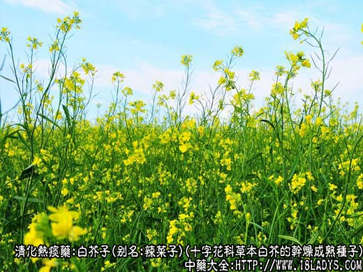
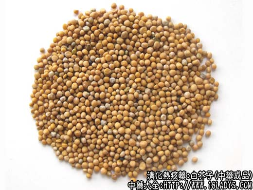
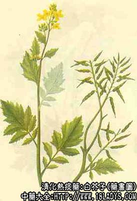

白芥子为较常用中药。始载《名医别录》名“芥”，列为上品，《唐本草》注“子入药用”。《开宝本草》另列白芥一项，白芥子附于其下。商品有白芥子、黄芥子两种，习惯以白芥子为主，华东地区习销黄芥子。
别名：辣菜子，芥末子。
来源：为十字花科一年生或二年生草本植物，白芥、黄芥的干燥成熟种子。均为栽培。
产地：主产于安徽、河南、山东、四川、河北、浙江、湖北等地，其它各省亦有生产。
性状鉴别：1、白芥子：呈小球型，直径1～2.5毫米。表面淡黄白色，略平滑，种皮薄脆，易压碎。破开后种仁乳白色，含油质。气味，味辛辣。
2、黄芥子：表面深黄色或黄棕色，体形略小于白芥子，余与白芥子同。
以粒大、饱满、均匀，色黄白色者为佳。
主要成分：白芥子含白芥子甙，经酶水解后释出挥发性白芥子油。又含脂肪油、芥子酶、芥子硷等。芥子含芥子甙、芥子碱等。
功效与作用：利气豁痰、消肿止痛，其作用为：
1、祛痰。属恶心性祛痰药，白芥子油对胃粘膜有轻度刺激，产生轻度恶心感，反射地增加支气管的分泌而祛痰。
2、对局部皮肤与刺激作用。温敷后能引起局部发红、充血、灼热，从而减轻局部组织疼痛，并有助于消炎。
炮制：炒用。
性味：辛、温。
归经：入肺经。
功能：祛痰、散寒、消肿、止痛。
主治：胸胁胀满，咳嗽气喘，寒痰凝结不化，阴疽，痰核等症。醋调外敷可治肿毒痹痛。
临床应用：为温化寒痰常用药。
1、用于寒痰滞于胁下，表现为咳嗽而痰多清稀、胸胁满闷作痛，可见于慢性气管炎、肺气肿，渗出性胸膜炎等，常配苏子、萝卜子，方如三子养亲汤。如属渗出性胸膜炎、痰饮积聚于胸胁较重，则需配大戟、甘遂加强利水作用，方如控涎丹。
2、用于筋骨疼痛，外用治风湿关节痛，神经痛等，研末醋调局部外敷，但如敷处出现刺痛感时，即应停止外敷，以免因刺激太甚而致皮肤发泡和造成溃疡。如为治跌打损伤疼痛，可与龙眼叶共捣烂调黄糖外敷。
使用注意：
1、本品辛温，凡阴虚火热，或有痔疮便血者不宜用。
2、本品不宜久煎，前人已认识到本品“煎汤不可大熟，熟则力减”。现代科学证实了沸水能抑制芥子酶的作用，从而使白芥子甙不能释出有效成分。
3、药量不宜过重，否则易致腹泻（因白芥子与水接触后，能释出硫化氢，刺激肠管而促进蠕动）。
白芥子与苏子、萝卜子比较，三者能化痰理气定喘，但白芥子偏于温肺气，萝卜子偏于散肺气，紫苏子偏于降肺气。
用量：3～6g，外用适量。
处方举例：三子养亲汤《韩氏医通》：白芥子、紫苏子、萝卜子，各3g（微炒），打碎后水煎服。
注：黄芥子多供饮食业作调味品芥末面使用。